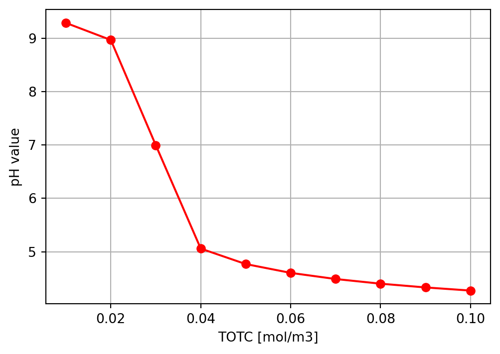
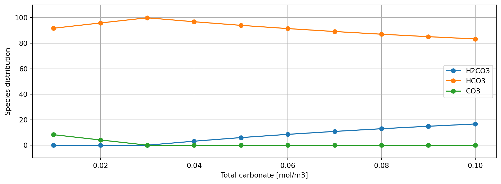
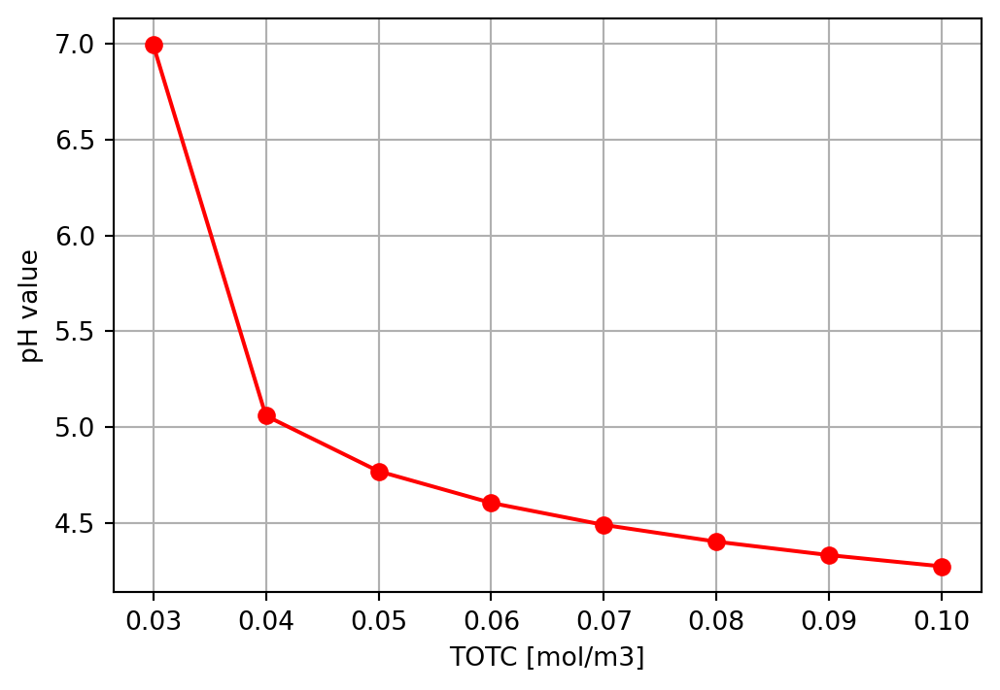
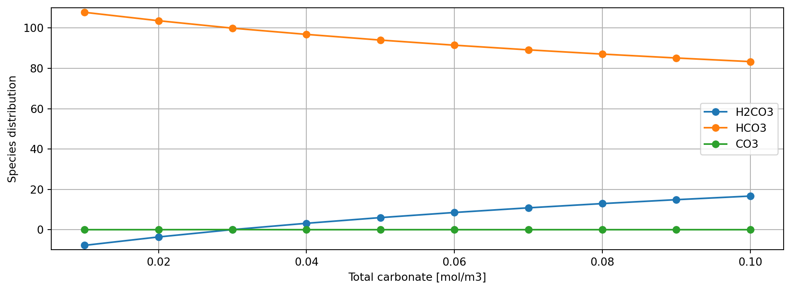

This code is hidden, but it is the functions from sepciation_modelSpeciaition functions
Compare the vectorized function with the original loop version
I will just paste the functions here as import does not work
The spec2_matrix function
import numpy as np
import matplotlib.pyplot as plt
import pandas as pd
import importlib
from time import time
TOTC = np.arange(1e-5, 1e-4 + 1e-5, 1e-5) * 1000 # mol/L * 1000 L/m3 = mol/m3
TK = 298 # K
ex_oh = 3e-2
# equilibrium constants from https://github.com/sashahafner/NH3-RTM kinSpec()
K_hco3 = 10**(-353.5305 - 0.06092*TK + 21834.37/TK + 126.8339 * np.log10(TK) - 1684915/TK**2)
K_co3 = 10 **(-461.4176 - 0.093448*TK + 26986.16/TK + 165.7595*np.log10(TK) - 2248629/TK**2)
KW = 10**(-4.2195 - 2915.16/TK)
start1 = time()
res = []
for i in range(len(TOTC)):
res.append (spec2_matrix(TOTC[i], K_hco3, K_co3, KW, ex_oh))
end1 = time()
print(f'run time for the loop version is {end1 - start1}')
# save the result in a dataframe
df = pd.DataFrame(res)
df['TOTC'] = TOTC
df['ex_oh'] = ex_oh
# mass balance
df['mass_balance_residual'] = df.TOTC - df.c_h2co3 - df.c_hco3 - df.c_co3
# charge balance
df['charge_balance_residual'] = df.c_h - df.c_hco3 - 2*df.c_co3 - df.c_oh
print(df) # to see the results in a table
# df.to_csv('spec_model_results.csv', index=False)
print()
if np.isclose(max(abs(df.mass_balance_residual)), 0, atol=1e-9):
print(f"Mass balance is effectively zero")
else:
print(f'Mass balance is {max(abs(df.mass_balance_residual))} which differs by {max(abs(df.mass_balance_residual)) - 1e-9}')
print()
if np.isclose(max(abs(df.charge_balance_residual)), 0, atol=1e-9):
print(f"Charge balance is effectively zero")
else:
print(f'Charge balance is {max(abs(df.charge_balance_residual))} which differs by {max(abs(df.charge_balance_residual)) - 1e-9}')
# Check the equlibrium constants values
# Should be, around 6.4, 16.5 and 14 respectively...
print()
print(f"K_hco3 = {K_hco3:.2e} (pKa1 = {-np.log10(K_hco3):.2f})")
print(f"K_co3 = {K_co3:.2e} (pKa2 = {-np.log10(K_co3):.2f})")
print(f"KW = {KW:.2e} (pKW = {-np.log10(KW):.2f})")
plt.figure(figsize=(6, 4))
plt.plot(df.TOTC, df.pH , 'ro-')
plt.xlabel('TOTC [mol/m3]')
plt.ylabel('pH value')
plt.grid()
# plt.savefig('pH_vs_TOTC.png')
plt.show()
plt.figure(figsize=(12, 4))
plt.plot(df.TOTC, df.c_h2co3/df.TOTC * 100, 'o-', label = 'H2CO3')
plt.plot(df.TOTC, df.c_hco3/df.TOTC * 100, 'o-', label = 'HCO3')
plt.plot(df.TOTC, df.c_co3/df.TOTC * 100, 'o-', label = 'CO3')
plt.ylim(-10,110)
plt.xlabel('Total carbonate [mol/m3]')
plt.ylabel('Species distribution')
plt.legend()
plt.grid()
# plt.savefig('Species_distribution.png')
plt.show()run time for the loop version is 0.00865626335144043
c_h2co3 c_hco3 c_co3 c_oh c_h pH \
0 1.785873e-08 0.009174 8.261806e-04 1.917166e-02 5.193070e-07 9.284576
1 7.801648e-08 0.019174 8.261444e-04 9.172387e-03 1.085429e-06 8.964398
2 1.135420e-05 0.029975 1.387338e-05 9.852817e-05 1.010470e-04 6.995477
3 1.268015e-03 0.038732 2.074136e-07 1.139998e-06 8.733332e-03 5.058820
4 2.996213e-03 0.047004 1.292759e-07 5.854907e-07 1.700450e-02 4.769436
5 5.118908e-03 0.054881 1.031558e-07 4.001342e-07 2.488160e-02 4.604122
6 7.584501e-03 0.062415 9.004998e-08 3.071326e-07 3.241590e-02 4.489242
7 1.035176e-02 0.069648 8.215460e-08 2.511056e-07 3.964857e-02 4.401772
8 1.338712e-02 0.076613 7.686746e-08 2.135872e-07 4.661317e-02 4.331491
9 1.666280e-02 0.083337 7.307285e-08 1.866601e-07 5.333746e-02 4.272968
TOTC ex_oh mass_balance_residual charge_balance_residual
0 0.01 0.03 2.168404e-19 -0.029997
1 0.02 0.03 -1.951564e-18 -0.029997
2 0.03 0.03 3.203479e-18 -0.030000
3 0.04 0.03 -3.039234e-18 -0.030000
4 0.05 0.03 1.105352e-18 -0.030000
5 0.06 0.03 1.113985e-17 -0.030000
6 0.07 0.03 -1.636192e-17 -0.030000
7 0.08 0.03 -1.310717e-18 -0.030000
8 0.09 0.03 1.181509e-17 -0.030000
9 0.10 0.03 9.499289e-18 -0.030000
Mass balance is effectively zero
Charge balance is 0.030000000364634957 which differs by 0.029999999364634957
K_hco3 = 2.67e-04 (pKa1 = 3.57)
K_co3 = 1.25e-14 (pKa2 = 13.90)
KW = 9.96e-15 (pKW = 14.00)

The vectorized version
# ==================================== test the new vectorized function
start2 = time()
res2 = spec2_vector(TOTC, K_hco3, K_co3, KW, ex_oh)
end2 = time()
print(f'run time for the vectorized function is {end2 - start2}')
print()
print()
df2 = pd.DataFrame(res2)
df2['TOTC'] = TOTC
df2['ex_oh'] = ex_oh
df2['mass_balance_residual'] = df2.TOTC - df2.c_h2co3 - df2.c_hco3 - df2.c_co3
# charge balance
df2['charge_balance_residual'] = df2.c_h - df2.c_hco3 - 2*df2.c_co3 - df2.c_oh
print(df2) # to see the results in a table
print()
if np.isclose(max(abs(df2.mass_balance_residual)), 0, atol=1e-9):
print(f"Mass balance is effectively zero")
else:
print(f'Mass balance is {max(abs(df2.mass_balance_residual))} which differs by {max(abs(df2.mass_balance_residual)) - 1e-9}')
print()
if np.isclose(max(abs(df2.charge_balance_residual)), 0, atol=1e-9):
print(f"Charge balance is effectively zero")
else:
print(f'Charge balance is {max(abs(df2.charge_balance_residual))} which differs by {max(abs(df2.charge_balance_residual)) - 1e-9}')
plt.figure(figsize=(6, 4))
plt.plot(df2.TOTC, df2.pH , 'ro-')
plt.xlabel('TOTC [mol/m3]')
plt.ylabel('pH value')
plt.grid()
# plt.savefig('pH_vs_TOTC.png')
plt.show()
plt.figure(figsize=(12, 4))
plt.plot(df2.TOTC, df2.c_h2co3/df2.TOTC * 100, 'o-', label = 'H2CO3')
plt.plot(df2.TOTC, df2.c_hco3/df2.TOTC * 100, 'o-', label = 'HCO3')
plt.plot(df2.TOTC, df2.c_co3/df2.TOTC * 100, 'o-', label = 'CO3')
plt.ylim(-10,110)
plt.xlabel('Total carbonate [mol/m3]')
plt.ylabel('Species distribution')
plt.legend()
plt.grid()
# plt.savefig('Species_distribution.png')
plt.show()run time for the vectorized function is 0.0030655860900878906
c_h2co3 c_hco3 c_co3 c_oh c_h pH TOTC \
0 -0.000777 0.010777 -2.621747e-08 -5.178949e-07 -0.019224 NaN 0.01
1 -0.000721 0.020721 -1.044232e-07 -1.072806e-06 -0.009280 NaN 0.02
2 0.000011 0.029975 1.387336e-05 9.852802e-05 0.000101 6.995476 0.03
3 0.001268 0.038732 2.074136e-07 1.139998e-06 0.008733 5.058820 0.04
4 0.002996 0.047004 1.292759e-07 5.854907e-07 0.017005 4.769436 0.05
5 0.005119 0.054881 1.031558e-07 4.001342e-07 0.024882 4.604122 0.06
6 0.007585 0.062415 9.004998e-08 3.071326e-07 0.032416 4.489242 0.07
7 0.010352 0.069648 8.215460e-08 2.511056e-07 0.039649 4.401772 0.08
8 0.013387 0.076613 7.686746e-08 2.135872e-07 0.046613 4.331491 0.09
9 0.016663 0.083337 7.307285e-08 1.866601e-07 0.053337 4.272968 0.10
ex_oh mass_balance_residual charge_balance_residual
0 0.03 2.197514e-18 -0.03
1 0.03 6.305234e-19 -0.03
2 0.03 5.483691e-18 -0.03
3 0.03 1.665187e-18 -0.03
4 0.03 -1.922606e-18 -0.03
5 0.03 7.053773e-18 -0.03
6 0.03 -1.248096e-17 -0.03
7 0.03 4.968881e-18 -0.03
8 0.03 2.271028e-18 -0.03
9 0.03 8.617713e-18 -0.03
Mass balance is effectively zero
Charge balance is 0.03000000000378501 which differs by 0.02999999900378501C:\Users\osman\AppData\Local\Temp\ipykernel_5976\2623626953.py:195: RuntimeWarning: invalid value encountered in log10
pH = - np.log10(c_h)

Before i edit on the vectorized function i want to test the run time with different array sizes
a function to measure runtime
def time_measure(func, TOTC, typ):
TK = 298 # K
ex_oh = 3e-2
# equilibrium constants from https://github.com/sashahafner/NH3-RTM kinSpec()
K_hco3 = 10**(-353.5305 - 0.06092*TK + 21834.37/TK + 126.8339 * np.log10(TK) - 1684915/TK**2)
K_co3 = 10 **(-461.4176 - 0.093448*TK + 26986.16/TK + 165.7595*np.log10(TK) - 2248629/TK**2)
KW = 10**(-4.2195 - 2915.16/TK)
if typ == 'loop':
start = time()
res = []
for i in range(len(TOTC)):
res.append(func(TOTC[i], K_hco3, K_co3, KW, ex_oh))
end = time()
elif typ == 'vector':
start = time()
res = func(TOTC,K_hco3, K_co3, KW, ex_oh)
end = time()
else:
raise ValueError('typ is not given')
run_time = end - start
return run_timelets take some cases
TOTC_original = np.arange(1e-5, 1e-4 + 1e-5, 1e-5) * 1000 # len = 10
TOTC_larger = np.arange(1e-5, 1e-3 + 1e-5, 1e-5) * 1000 # len = 100
TOTC_even_larger = np.arange(1e-5, 1e-2 + 1e-5, 1e-5) * 1000 # len = 1000
print("Testing the loop version")
time_loop_10 = time_measure(spec2_matrix,TOTC_original,typ = 'loop')
time_loop_100 = time_measure(spec2_matrix,TOTC_larger,typ = 'loop')
time_loop_1000 = time_measure(spec2_matrix,TOTC_even_larger,typ = 'loop')
print("\nTesting the vector version")
time_vec_10 = time_measure(spec2_vector,TOTC_original,typ = 'loop')
time_vec_100 = time_measure(spec2_vector,TOTC_larger,typ = 'loop')
time_vec_1000 = time_measure(spec2_vector,TOTC_even_larger,typ = 'loop')
# Compare
print("\n" + "="*50)
print("Speed comparison (vectorized / loop):")
print(f"10 points: {time_vec_10/time_loop_10:.2f}x")
print(f"100 points: {time_vec_100/time_loop_100:.2f}x")
print(f"1000 points: {time_vec_1000/time_loop_1000:.2f}x")Testing the loop version
Testing the vector versionC:\Users\osman\AppData\Local\Temp\ipykernel_5976\2623626953.py:195: RuntimeWarning: invalid value encountered in log10
pH = - np.log10(c_h)
==================================================
Speed comparison (vectorized / loop):
10 points: 0.41x
100 points: 0.86x
1000 points: 1.39xOke since the time for the vectorized function is larger, this means that the loop version is fine for now?.